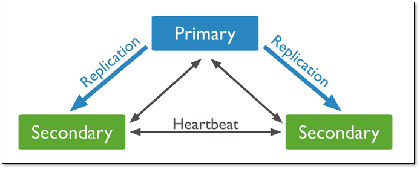
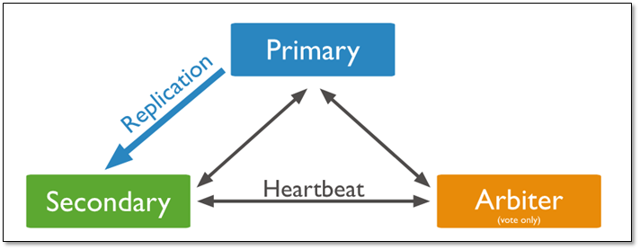
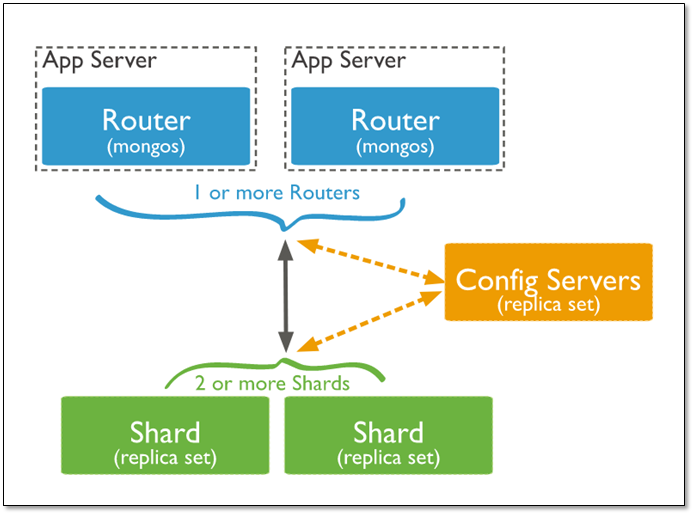

MongoDB学习（1）
MongoDB学习
1.什么是MongoDB
MongoDB是由C++编写的，是一个基于分布式文件存储的开源数据库，在高负载的情况下，可以通过添加更多的节点（shard分片）来保证服务器的性能。MongoDB旨在为Web应用提供一个可扩展的高性能数据存储解决方案。
MongoDB是一个介于关系型数据库和非关系型数据库之间的产品，是非关系型数据库中最像关系型数据库的。
RDBMS（关系型数据库系统）遵循ACID原则。即
1.Actomicity原子性
事务中所有的操作，要么全做要么全不做。事务成功的标志是所有的操作都是成功的，如果有一个操作是失败的，则整个事务失败，需要回滚。
2.Consistency一致性
数据库要一直处于一致的状态，事务的运行不会改变数据库原有的约束。
3.Isolation独立性
并发的事务之间不会相互影响，如果一个事务要访问另一个事务要修改的数据，只要另一个事务没有提交操作，则它所访问的数据不会受到未提交事务的影响。
4.Durability持久性
一旦事务提交之后，它所做的修改就会永久保留在服务器中，即使宕机而导致数据丢失
2.MongoDB的概念解析
| SQL术语/概念 | MongoDB术语/概念 | 解释/说明 |
|---|---|---|
| database | database | 数据库 |
| table | collection | 数据库表/集合 |
| row | document | 数据记录行/文档 |
| column | field | 数据字段/域 |
| index | index | 索引 |
| table joins | 表连接,MongoDB不支持 | |
| primary key | primary key | 主键,MongoDB自动将_id字段设置为主键 |
（通过与关系型数据库中的术语/概念去理解MongoDB中的术语与概念）
2.1数据库
一个MongoDB中可以建立多个数据库。
MongoDB的默认数据库为”db”，该数据库存储在data目录中。
MongoDB的单个实例可以容纳多个独立的数据库，每一个都有自己的集合和权限，不同的数据库也放置在不同的文件中。
2.2文档结构
MongoDB将数据存储为文档（document）。数据结构由键值（key=>value）组成，BSON格式。字段值value可以包含各种格式，包括但不限于其它文档、数组、文档数组等。

BSON（/ˈbiːsən/）是一种计算机数据交换格式，主要被用作MongoDB数据库中的数据存储和网络传输格式。它是一种二进制表示形式，能用来表示简单数据结构、关联数组（MongoDB中称为“对象”或“文档”）以及MongoDB中的各种数据类型。BSON之名缘于JSON，含义为Binary JSON（二进制JSON）。（摘自百度百科）
下表列出了 RDBMS 与 MongoDB 对应的术语：
RDBMS MongoDB 数据库 数据库 表格 集合 行 文档 列 字段 表联合 嵌入文档 主键 主键 (MongoDB 提供了 key 为 _id ) 数据库服务和客户端 Mysqld/Oracle mongod mysql/sqlplus mongo 需要注意的是：
- 文档中的键/值对是有序的。
- 文档中的值不仅可以是在双引号里面的字符串，还可以是其他几种数据类型（甚至可以是整个嵌入的文档)。
- MongoDB区分类型和大小写。
- MongoDB的文档不能有重复的键。
- 文档的键是字符串。除了少数例外情况，键可以使用任意UTF-8字符。
文档键命名规范：
- 键不能含有\0 (空字符)。这个字符用来表示键的结尾。
- .和$有特别的意义，只有在特定环境下才能使用。
- 以下划线”_”开头的键是保留的(不是严格要求的)。
2.3集合
集合就是 MongoDB 文档组，类似于 RDBMS （关系数据库管理系统：Relational Database Management System)中的表格。
集合存在于数据库中，集合没有固定的结构，这意味着你在对集合可以插入不同格式和类型的数据，但通常情况下我们插入集合的数据都会有一定的关联性。
合法的集合名
- 集合名不能是空字符串””。
- 集合名不能含有\0字符（空字符)，这个字符表示集合名的结尾。
- 集合名不能以”system.”开头，这是为系统集合保留的前缀。
- 用户创建的集合名字不能含有保留字符。有些驱动程序的确支持在集合名里面包含，这是因为某些系统生成的集合中包含该字符。除非你要访问这种系统创建的集合，否则千万不要在名字里出现$。
2.4MongoDB的数据类型
下表为MongoDB中常用的几种数据类型。
| 数据类型 | 描述 |
|---|---|
| String | 字符串。存储数据常用的数据类型。在 MongoDB 中，UTF-8 编码的字符串才是合法的。 |
| Integer | 整型数值。用于存储数值。根据你所采用的服务器，可分为 32 位或 64 位。 |
| Boolean | 布尔值。用于存储布尔值（真/假）。 |
| Double | 双精度浮点值。用于存储浮点值。 |
| Min/Max keys | 将一个值与 BSON（二进制的 JSON）元素的最低值和最高值相对比。 |
| Arrays | 用于将数组或列表或多个值存储为一个键。 |
| Timestamp | 时间戳。记录文档修改或添加的具体时间。 |
| Object | 用于内嵌文档。 |
| Null | 用于创建空值。 |
| Symbol | 符号。该数据类型基本上等同于字符串类型，但不同的是，它一般用于采用特殊符号类型的语言。 |
| Date | 日期时间。用 UNIX 时间格式来存储当前日期或时间。你可以指定自己的日期时间：创建 Date 对象，传入年月日信息。 |
| Object ID | 对象 ID。用于创建文档的 ID。 |
| Binary Data | 二进制数据。用于存储二进制数据。 |
| Code | 代码类型。用于在文档中存储 JavaScript 代码。 |
| Regular expression | 正则表达式类型。用于存储正则表达式。 |
3.MongDB集群
3.1复制集
一组Mongodb复制集，就是一组mongod进程，这些进程维护同一个数据集合。复制集提供了数据冗余和高等级的
可靠性，这是生产部署的基础。
3.1.1目的
保证数据在生产部署时的冗余和可靠性，通过在不同的机器上保存副本来保证数据的不会因为单点损坏而丢
失。能够随时应对数据丢失、机器损坏带来的风险。
还能提高读取能力，用户的读取服务器和写入服务器在不同的地方，而且，由不同的服务器为不同的用户提供
服务，提高整个系统的负载。
3.1.2机制
一组复制集就是一组mongod实例掌管同一个数据集，实例可以在不同的机器上面。实例中包含一个主导
（Primary），接受客户端所有的写入操作，其他都是副本实例（Secondary），从主服务器上获得数据并保持
同步。
主服务器很重要，包含了所有的改变操作（写）的日志。但是副本服务器集群包含有所有的主服务器数据，因
此当主服务器挂掉了，就会在副本服务器上重新选取一个成为主服务器。
每个复制集还有一个仲裁者（Arbiter），仲裁者不存储数据，只是负责通过心跳包来确认集群中集合的数量，
并在主服务器选举的时候作为仲裁决定结果。
3.1.3架构
基本的架构由3台服务器组成，一个三成员的复制集，由三个有数据，或者两个有数据，一个作为仲裁者。
3.1.3.1三个存储数据的复制集
一个主，两个从库组成，主库宕机时，这两个从库都可以被选为主库。

当主库宕机后,两个从库都会进行竞选，其中一个变为主库，当原主库恢复后，作为从库加入当前的复制集群即可。

3.1.3.2存在arbiter节点的复制集
一个主库，一个从库，可以在选举中成为主库，一个arbiter节点，在选举中，只进行投票，不能成为主库。

说明：由于arbiter节点没有复制数据，因此这个架构中仅提供一个完整的数据副本。arbiter节点只需要更少的
资源，代价是更有限的冗余和容错。
当主库宕机时，将会选择从库成为主，主库修复后，将其加入到现有的复制集群中即可。

3.1.4Primary选举
复制集通过replSetInitiate命令（或mongo shell的rs.initiate()）进行初始化，初始化后各个成员间开始发送心跳消
息，并发起Priamry选举操作，获得『大多数』成员投票支持的节点，会成为Primary，其余节点成为Secondary。
大多数：假设复制集内投票成员数量为N，则大多数为 N/2 + 1，当复制集内存活成员数量不足大多数时，整个复制集将无法
选举出Primary，复制集将无法提供写服务，处于只读状态。
| 成员 | 说明 |
|---|---|
| Primary | Priamry的作用是接收用户的写入操作，将自己的数据同步给其他的Secondary。 |
| Secondary | 正常情况下，复制集的Seconary会参与Primary选举（自身也可能会被选为Primary），并从Primary同步最新写入的数据，以保证与Primary存储相同的数据。Secondary可以提供读服务，增加Secondary节点可以提供复制集的读服务能力，同时提升复制集的可用性。另外，Mongodb支持对复制集的Secondary节点进行灵活的配置，以适应多种场景的需求 |
| Arbiter | Arbiter节点只参与投票，不能被选为Primary，并且不从Primary同步数据。比如你部署了一个2个节点的复制集，1个Primary，1个Secondary，任一节点宕机，复制集将不能提供服务了（无法选出Primary），这时可以给复制集添加一个Arbiter节点，即使有节点宕机，仍能选出Primary。Arbiter本身不存储数据，是非常轻量级的服务，当复制集成员为偶数时，最好加入一个Arbiter节点，以提升复制集可用性。 |
| Priority0 | Priority0节点的选举优先级为0，不会被选举为Primary。比如你跨机房A、B部署了一个复制集，并且想指定Primary必须在A机房，这时可以将B机房的复制集成员Priority设置为0，这样Primary就一定会是A机房的成员。（注意：如果这样部署，最好将『大多数』节点部署在A机房，否则网络分区时可能无法选出Primary） |
| Vote0 | Mongodb 3.0里，复制集成员最多50个，参与Primary选举投票的成员最多7个，其他成员（Vote0）的vote属性必须设置为0，即不参与投票。 |
| Hidden | Hidden节点不能被选为主（Priority为0），并且对Driver不可见。因Hidden节点不会接受Driver的请求，可使用Hidden节点做一些数据备份、离线计算的任务，不会影响复制集的服务。 |
| Delayed | Delayed节点必须是Hidden节点，并且其数据落后与Primary一段时间（可配置，比如1个小时）。因Delayed节点的数据比Primary落后一段时间，当错误或者无效的数据写入Primary时，可通过Delayed节点的数据来恢复到之前的时间点。 |
3.2分片集群
分片（sharding）是MongoDB用来将大型集合分割到不同服务器（或者说一个集群）上所采用的方法。尽管分片起源于关系型数据库分区，但MongoDB分片完全又是另一回事。
和MySQL分区方案相比，MongoDB的最大区别在于它几乎能自动完成所有事情，只要告诉MongoDB要分配数据，它就能自动维护数据在不同服务器之间的均衡。
3.2.1简介
高数据量和吞吐量的数据库应用会对单机的性能造成较大压力,大的查询量会将单机的CPU耗尽,大的数据量对单机的存储压力较大,最终会耗尽系统的内存而将压力转移到磁盘IO上。为了解决这些问题,有两个基本的方法: 垂直扩展和水平扩展。
垂直扩展：增加更多的CPU和存储资源来扩展容量。
水平扩展：将数据集分布在多个服务器上。水平扩展即分片。
分片为应对高吞吐量与大数据量提供了方法。使用分片减少了每个分片需要处理的请求数，因此，通过水平扩展，集群可以提高自己的存储容量和吞吐量。举例来说，当插入一条数据时，应用只需要访问存储这条数据的分片.使用分片减少了每个分片存储的数据。例如，如果数据库1tb的数据集，并有4个分片，然后每个分片可能仅持有256GB的数据。如果有40个分片，那么每个切分可能只有25GB的数据。

3.2.2优势
对集群进行抽象，让集群“不可见”
MongoDB自带了一个叫做mongos的专有路由进程。mongos就是掌握统一路口的路由器，其会将客户端发来的请求准确无误的路由到集群中的一个或者一组服务器上，同时会把接收到的响应拼装起来发回到客户端。保证集群总是可读写
MongoDB通过多种途径来确保集群的可用性和可靠性。将MongoDB的分片和复制功能结合使用，在确保数据分片到多台服务器的同时，也确保了每分数据都有相应的备份，这样就可以确保有服务器换掉时，其他的从库可以立即接替坏掉的部分继续工作。使集群易于扩展
当系统需要更多的空间和资源的时候，MongoDB使我们可以按需方便的扩充系统容量。
3.2.3架构
| 组件 | 说明 |
|---|---|
| Config Server | 存储集群所有节点、分片数据路由信息。默认需要配置3个Config Server节点。 |
| Mongos | 提供对外应用访问，所有操作均通过mongos执行。一般有多个mongos节点。数据迁移和数据自动平衡。 |
| Mongod | 存储应用数据记录。一般有多个Mongod节点，达到数据分片目的。 |

Mongos本身并不持久化数据，Sharded cluster所有的元数据都会存储到Config Server，而用户的数据会分散存储到各个shard。Mongos启动后，会从配置服务器加载元数据，开始提供服务，将用户的请求正确路由到对应的分片。
当数据写入时，MongoDB Cluster根据分片键设计写入数据。当外部语句发起数据查询时，MongoDB根据数据分布自动路由至指定节点返回数据。
3.2.4集群中数据分布
在一个shard server内部，MongoDB会把数据分为chunks，每个chunk代表这个shard server内部一部分数据。
chunk的产生，会有以下两个用途：
- Splitting：当一个chunk的大小超过配置中的chunk size时，MongoDB的后台进程会把这个chunk切分成更小的chunk，从而避免chunk过大的情况
- Balancing：在MongoDB中，balancer是一个后台进程，负责chunk的迁移，从而均衡各个shard server的负载，系统初始1个chunk，chunk size默认值64M,生产库上选择适合业务的chunk size是最好的。mongoDB会自动拆分和迁移chunks。
3.2.5chunk分裂及迁移
随着数据的增长，其中的数据大小超过了配置的chunk size，默认是64M，则这个chunk就会分裂成两个。数据的增长会让chunk分裂得越来越多。

这时候，各个shard 上的chunk数量就会不平衡。mongos中的一个组件balancer 就会执行自动平衡。把chunk从
chunk数量最多的shard节点挪动到数量最少的节点。

3.2.6chunksize
chunk的分裂和迁移非常消耗IO资源；chunk分裂的时机：在插入和更新，读数据不会分裂。
- 小的chunksize：数据均衡是迁移速度快，数据分布更均匀。数据分裂频繁，路由节点消耗更多资源。
- 大的chunksize：数据分裂少。数据块移动集中消耗IO资源。
适合业务的chunksize是最好的。
chunkSize 对分裂及迁移的影响
- MongoDB 默认的 chunkSize 为64MB，如无特殊需求，建议保持默认值；chunkSize 会直接影响到 chunk 分裂、迁移的行为。
- chunkSize 越小，chunk 分裂及迁移越多，数据分布越均衡；反之，chunkSize 越大，chunk 分裂及迁移会更少，但可能导致数据分布不均。
- chunk 自动分裂只会在数据写入时触发，所以如果将 chunkSize 改小，系统需要一定的时间来将 chunk 分裂到指定的大小。
- chunk 只会分裂，不会合并，所以即使将 chunkSize 改大，现有的 chunk 数量不会减少，但 chunk 大小会随着写入不断增长，直到达到目标大小。